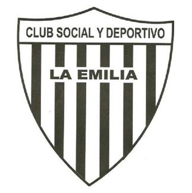

Todo comenzó cuando uno de los hermanos fundadores del pueblo de La Emilia e integrante de la textil lanera, Juan Salvador Córdova, quiso brindar a sus obreros un lugar óptimo para la recreación.
Así fue como en al año 1945 inauguró la Obra Social J. Salvador Córdova, que brindaba gratuitamente servicios de luz, calefacción, agua fría y caliente.
El lugar contaba con un restaurante, un cine teatro de primera línea, que se asemejaba al Gran Rex de Buenos Aires, donde se realizaban espectáculos semanalmente.
También otorgaba el beneficio de diversas prácticas deportivas tales como el fútbol, el básquet, gimnasia artística, bochas, natación, pelota paleta, boxeo, vóley, entre otros.
El predio era toda una novedad para la época, sus instalaciones eran muy modernas y lujosas.
Cada deporte contó con algunos famosos para su inauguración.
Uno de ellos fue Pedro Candiotti, nadador de aguas abiertas argentino que brindó un espectáculo el día de apertura de la pileta olímpica.
En esos tiempos todo era de color dorado, tanto obreros como pueblerinos de La Emilia visitaban y gozaban de los beneficios gratuitos de la instalación.
Salvador Córdova era un ícono de progreso, generosidad y bienestar en el pueblo.
No había diferencias sociales, todo se disfrutaba, todo era superación.
Mes a mes un famoso asistía para eventos sociales, el cine- teatro tenía palcos para la familia
fundadora, cada uno con su nombre grabado en el respaldar de las lujosas butacas.
Las películas que estrenaba la capital argentina, eran proyectadas en el pueblo.
Y los fines de semana los trajes de gala estaban a la orden del día.
Con el paso de los años y la llegada de la quiebra de la industria textil la Obra Social fue decayendo y Salvador no pudo seguir brindando esos beneficios tan únicos para la época.
En 1981 un grupo de personas interesadas en el establecimiento comenzaron a trabajar para su mantenimiento, pero conscientes de que en cualquier momento podía llegar el remate judicial del mismo.
Con Oscar Murri a la cabeza se realizó un arduo trabajo para no perder ese lugar tan preciado para el pueblo de La Emilia.
El 2 de octubre de 1981 se hizo el Acta N° 1 de Fundación, donde se dio a conocer la primera comisión: Presidente: Oscar Murri, Vicepresidente: Carlos Bellagamba, Secretario: Alcides Ferreyra, Pro Secretario: Elbio Oviedo, Tesorero: Hugo Ricardino, Pro Tesorero: Héctor Zamparo, Vocales Titulares: Oscar Delgado, Urbano Clérico, Hernando Migliaro y Rubén Ricardini. Vocales Suplentes: Mario Díaz, Antonio Manrique y Rubén Marcoratti, Revisores de cuentas titulares: Sergio Benigni y Lino Pasquinelli, Revisor de cuenta suplente: Víctor Vettori.
“Cuando llegó el remate fuimos con muchas ilusiones pero con poca plata”, admitió el ex presidente del club emiliano.
Aunque que para esa época, en 1985, consiguieron un gran apoyo de parte del gobierno radical, a cargo de Raúl Alfonsín, pudieron contactarse con la Secretaría de Deportes de la Nación y les dieron un cheque para poder sumar fondos para la compra del predio.
Desde ese momento la Obra Social pasó a llamarse Club Social y Deportivo La Emilia, se estableció la suscripción de socios, que contaba con la coordinación del secretario Ferreyra, y se pactaron los objetivos a futuro.
La campaña llegó hasta Grondona, quien hizo posible que las selecciones juveniles de fútbol asistieran a la cancha de 12 de Octubre de San Nicolás para brindar un espectáculo deportivo y recaudar fondos, de los cuales la totalidad fue dirigida al club.
De esta manera, realizando eventos, rifas, tocando puertas políticas y sociales es como se logró la compra del predio de la Obra Social.
Ocurrió el día martes 28 de mayo de 1985, a las 12 del mediodía, en la Corporación de Rematadores en Presidente Perón 1233, en Capital Federal.
La lucha valió la pena, cada pueblerino comprendió la situación y apostó al club, asociándose, pagando por lo que antes era gratuito, dando su esfuerzo, lo que podía, trabajando unidos.
Dejando todo por ese sentimiento de pertenencia, y llegando lejos, logrando triunfos en básquet, fútbol, haciendo que los niños tuviesen un lugar donde reunirse y logrando en su auge una cantidad aproximada de 1700 socios.
Al respecto, Murri expresó: “No hay mejor cosa que un pueblo, una familia, se pueda juntar en un mismo lugar para disfrutar de los quehaceres cotidianos”.
Y añadió: “La Emilia siempre fue un abanderado en el deporte, porque de acá salían buenos deportistas, por lo cual creo que la misión estuvo cumplida”.
Luego de varios años de gestión, una nueva comisión abordó el club en 1995. Luis Dennis estaba al mando y lo acompañaba su fiel amigo y vicepresidente, Ítalo Musso, quien con pasión y dedicación trabajó durante 14 años en la institución que hoy sigue siendo el lugar de su vida.
Su período fue duro, el país atravesó más de una crisis, sin dudas la más profunda en 2001, lo que hizo dudar de la continuidad del club debido a la situación económica y a la masiva cantidad de socios que se borraban de la institución por no poder pagar la cuota societaria.
Pero un tropezón no es caída y la comisión de esos tiempos tuvo en claro su objetivo: no sacar a los chicos del club por no poder pagar.
Todos asistían al mismo, la entrada al lugar no se le negaba a nadie y la gestión era permisiva por el momento social, político y económico del momento por lo cual, nada se controlaba.
Por tal motivo la comisión determinó que cada deporte tenía que tener su sub-comisión para poder funcionar, debido a que la institución ya no contaba con los recursos económicos necesarios para mantenerlos.
Sin respaldo, no había deporte. Actualmente el club cuenta con una nueva comisión en donde los jóvenes participan y ayudan a mantener y mejorar el lugar que los vio crecer.
El club fue, es y será lo más grande para los habitantes de La Emilia.
Con el correr de los años cambiaron presidentes, comisiones, deportes e incluso familias, pero la pasión y el sentimiento de pertenencia de todos los que tuvieron la dicha de pasar aunque sea un momento de su vida en él, sigue latente.
Con un mismo objetivo: seguir asistiendo, viviendo y disfrutando, dándoles a los chicos de hoy, los hombres del mañana, el placer de jugar, aprender, compartir y valorar la vida deportiva y en sociedad.
“En el arroyo de La Emilia no puede nacer una ballena, pero sí alguien súper, súper, súper grande”, manifestó Musso dejando en claro lo que significa pertenecer al pueblo y al Club Social y Deportivo La Emilia.
Teniendo siempre presente la lucha de los hermanos Córdova, que dieron la vida por y para su pequeña sociedad.
Por Renata Abramor
Contacto:
FACEBOOKTelefono:336448-0014
Direccion:Hermeregildo Cordova 255
E-Mail:tecnica5_laemilia@yahoo.com.ar